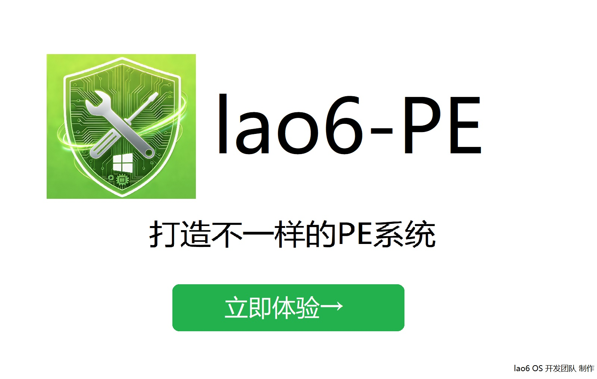

!DOCTYPE html>
<html lang="zh-CN">
<head>
    <meta charset="UTF-8">
    <meta name="viewport" content="width=device-width, initial-scale=1.0, maximum-scale=1.0, user-scalable=no">
    <meta name="mobile-web-app-capable" content="yes">
    <meta name="apple-mobile-web-app-capable" content="yes">
    <title>抖音-老六说电脑的官网</title>
    <link rel="icon" href="icon.ico" type="image/x-icon">
    <style>
        * {
            margin: 0;
            padding: 0;
            box-sizing: border-box;
            font-family: "微软雅黑", sans-serif;
        }

        body {
            /* 背景图片 - 移除渐变遮罩，显示原图 */
            background: url('background.jpg') no-repeat center center fixed;
            background-size: cover;
            position: relative;
            min-height: 300vh;
            overflow-x: hidden;
            /* 增加文字颜色对比度，适配原图背景 */
            color: #fff;
        }
        /* 移除背景遮罩层 */
        /* 遮罩层 - 适配移动端磨砂 */
        .overlay {
            position: fixed;
            top: 0;
            left: 0;
            width: 100%;
            height: 100%;
            backdrop-filter: blur(8px);
            -webkit-backdrop-filter: blur(8px);
            background: rgba(0, 0, 0, 0.2);
            z-index: 998;
            display: block; /* 初始显示 */
        }
        /* 新增：浏览器信息+时间 固定在屏幕顶部 */
        .top-info-bar {
            position: fixed;
            top: 0;
            left: 0;
            width: 100%;
            display: flex;
            justify-content: space-between;
            padding: 4px 12px;
            background: #000; /* 黑色背景 */
            color: #fff;
            font-size: 12px;
            z-index: 997; /* 层级低于公告弹窗 */
        }
        /* 公告弹窗 - 响应式尺寸 + 移动端适配（调整top值，避开顶部信息栏） */
        .notice-window {
            position: fixed;
            top: 24px; /* 避开顶部信息栏高度 */
            left: 50%;
            transform: translate(-50%, 0);
            width: clamp(300px, 80vw, 600px); /* 响应式宽度 */
            height: clamp(300px, 70vh, 450px); /* 响应式高度 */
            background: rgba(28, 28, 30, 0.7);
            border: 1px solid rgba(255, 255, 255, 0.15);
            border-radius: 8px;
            box-shadow: 0 8px 32px rgba(0, 0, 0, 0.3);
            color: #fff;
            z-index: 999;
            backdrop-filter: blur(20px);
            -webkit-backdrop-filter: blur(20px);
            overflow: hidden;
            display: block; /* 初始显示 */
        }

        .notice-header {
            padding: 12px 16px; /* 移动端缩小内边距 */
            border-bottom: 1px solid rgba(255, 255, 255, 0.1);
            display: flex;
            justify-content: center; /* 公告标题居中 */
            align-items: center;
            background: rgba(0, 0, 0, 0.08);
        }

        .notice-browser {
            /* 原浏览器信息已移到顶部栏，此处隐藏 */
            display: none;
        }

        .notice-time {
            /* 原时间已移到顶部栏，此处隐藏 */
            display: none;
        }

        .notice-title {
            font-size: 16px;
            font-weight: 500;
            letter-spacing: 0.5px;
        }

        .notice-content {
            padding: 16px;
            min-height: calc(100% - 100px);
            background: rgba(0, 0, 0, 0.05);
        }

        .notice-footer {
            padding: 12px 16px;
            border-top: 1px solid rgba(255, 255, 255, 0.1);
            text-align: right;
            background: rgba(0, 0, 0, 0.08);
        }

        .notice-close {
            padding: 6px 16px; /* 移动端缩小按钮 */
            background: rgba(0, 120, 212, 0.9);
            border: none;
            border-radius: 8px;
            color: #fff;
            cursor: pointer;
            font-size: 14px;
            transition: all 0.2s ease;
            backdrop-filter: blur(8px);
            -webkit-backdrop-filter: blur(8px);
        }

        .notice-close:hover, .notice-close:active {
            background: rgba(0, 99, 177, 0.9);
            box-shadow: 0 2px 8px rgba(0, 120, 212, 0.4);
        }
        /* 头部区域 - 响应式 + 移动端适配（调整top值，避开顶部信息栏） */
        .header {
            position: sticky;
            top: 24px; /* 避开顶部信息栏高度 */
            z-index: 900;
            padding: 10px 16px; /* 移动端缩小内边距 */
            border-bottom: 2px solid rgba(0, 0, 0, 0.08);
            display: flex;
            flex-wrap: wrap; /* 移动端换行 */
            justify-content: space-between;
            align-items: center;
            gap: 10px; /* 移动端间距 */
            background: rgba(255, 255, 255, 0.7);
            backdrop-filter: blur(15px);
            -webkit-backdrop-filter: blur(15px);
            border-radius: 0 0 12px 12px;
            box-shadow: 0 2px 10px rgba(0, 0, 0, 0.08);
        }

        .header-title {
            font-size: clamp(14px, 4vw, 18px); /* 响应式字体 */
            font-weight: 600;
            color: #1a1a1a;
        }

        /* 头部时间已移到顶部栏，此处隐藏 */
        .header-time {
            display: none;
        }
        /* 头部按钮容器 - 移动端适配 */
        .header-btn-group {
            display: flex;
            flex-wrap: wrap;
            gap: 8px; /* 按钮间距 */
        }
        /* 头部按钮样式 - 响应式 */
        .header-btn {
            padding: 6px 12px; /* 移动端缩小按钮 */
            margin: 0; /* 重置margin */
            border: 1px solid rgba(0, 0, 0, 0.1);
            background: rgba(255, 255, 255, 0.8);
            cursor: pointer;
            touch-action: manipulation; /* 优化移动端触摸 */
            border-radius: 8px;
            transition: all 0.2s ease;
            backdrop-filter: blur(8px);
            -webkit-backdrop-filter: blur(8px);
            font-size: clamp(12px, 3vw, 14px);
        }

        .header-btn:hover, .header-btn:active {
            background: rgba(245, 245, 245, 0.8);
            box-shadow: 0 2px 8px rgba(0, 0, 0, 0.1);
        }

        .header-btn.green {
            background: rgba(0, 255, 0, 0.8);
            border-color: rgba(0, 200, 0, 0.2);
            color: #000;
        }
        /* 主体区域 - 响应式布局 */
        .main {
            display: flex;
            flex-direction: column; /* 移动端纵向排列 */
            padding: 16px; /* 移动端缩小内边距 */
            gap: 20px;
            margin: 0 auto;
            max-width: 1200px;
            margin-top: 24px; /* 避开顶部信息栏高度 */
        }
        /* 媒体查询 - 桌面端恢复横向布局 */
        @media (min-width: 768px) {
            .main {
                flex-direction: row;
                padding: 20px;
                gap: 25px;
            }
        }
        
        /* 个人信息侧边栏 - 响应式（核心修改：小窗口横向显示） */
        .sidebar {
            width: 100%; /* 移动端/小窗口全屏宽度 */
            max-width: 220px; /* 桌面端大窗口宽度 */
            height: clamp(300px, 50vh, 470px); /* 大窗口高度 */
            margin: 0 auto; /* 移动端居中 */
            border: 1px solid rgba(0, 0, 0, 0.08);
            border-radius: 12px;
            padding: 15px;
            backdrop-filter: blur(15px);
            -webkit-backdrop-filter: blur(15px);
            background: rgba(255, 255, 255, 0.75);
            box-shadow: 0 4px 15px rgba(0, 0, 0, 0.08);
            display: flex;
            flex-direction: column; /* 大窗口纵向布局 */
            align-items: center; /* 大窗口内容居中 */
        }

        /* 小窗口/移动端（≤767px）- 侧边栏横向布局 */
        @media (max-width: 767px) {
            .sidebar {
                flex-direction: row; /* 横向排列 */
                height: auto; /* 高度自适应 */
                max-width: 100%; /* 全屏宽度 */
                align-items: center; /* 内容垂直居中 */
                gap: 15px; /* 头像与文字的间距 */
                padding: 10px 15px; /* 缩小内边距 */
            }
            .avatar-frame {
                width: 80px; /* 强制正方形宽度 */
                height: 80px; /* 强制正方形高度 */
                margin-bottom: 0; /* 取消底部间距 */
                padding: 8px; /* 适配正方形内边距 */
            }
            .sidebar-text.nickname {
                font-size: clamp(14px, 4vw, 16px); /* 小窗口缩小昵称字体 */
                margin-bottom: 5px; /* 缩小文字间距 */
            }
            .sidebar-text.team {
                font-size: clamp(12px, 3vw, 13px); /* 小窗口缩小团队字体 */
            }
            /* 文字区域纵向排列 */
            .sidebar-text-group {
                display: flex;
                flex-direction: column;
            }
        }

        /* 桌面端大窗口（≥768px）- 保持原有样式 */
        @media (min-width: 768px) {
            .sidebar {
                margin: 0; /* 桌面端取消居中 */
                height: 470px; /* 桌面端固定高度 */
            }
        }

        /* 头像框样式 - 强制正方形（核心修改） */
        .avatar-frame {
            border: 1px solid rgba(0, 0, 0, 0.08);
            width: 120px; /* 强制正方形宽度 */
            height: 120px; /* 强制正方形高度 */
            margin-bottom: 15px;
            border-radius: 8px;
            background: rgba(255, 255, 255, 0.85);
            display: flex;
            align-items: center;
            justify-content: center;
            flex-shrink: 0; /* 防止被压缩变形 */
        }
        /* 头像图片样式 - 适配正方形容器 */
        .avatar-img {
            width: 100%;
            height: 100%;
            object-fit: contain; /* 保持图片比例，不拉伸 */
        }
        /* 抖音昵称样式 - 加粗放大 */
        .sidebar-text.nickname {
            font-size: clamp(16px, 4vw, 18px); /* 放大字体 */
            font-weight: 700; /* 加粗 */
            color: #222; /* 加深颜色增强对比 */
            margin-bottom: 15px; /* 增加间距 */
        }
        /* 团队名称样式 - 保持原有 */
        .sidebar-text.team {
            font-size: clamp(12px, 3vw, 14px);
            color: #333;
            margin-bottom: 12px;
        }
        /* 简介内容区 - 响应式高度 */
        .content {
            flex: 1;
            width: 100%;
            height: clamp(300px, 50vh, 470px); /* 响应式高度 */
            border: 1px solid rgba(0, 0, 0, 0.08);
            border-radius: 12px;
            padding: 20px; /* 移动端缩小内边距 */
            text-align: center;
            backdrop-filter: blur(15px);
            -webkit-backdrop-filter: blur(15px);
            background: rgba(255, 255, 255, 0.75);
            box-shadow: 0 4px 15px rgba(0, 0, 0, 0.08);
            display: flex;
            align-items: center;
            justify-content: center;
        }

        @media (min-width: 768px) {
            .content {
                height: 470px; /* 桌面端固定高度 */
                padding: 40px;
            }
        }
        /* 个人简介文本样式 - 优化排版 */
        .intro-text {
            font-size: clamp(14px, 3vw, 16px);
            color: #333;
            line-height: 1.8;
            max-width: 800px;
            text-align: left;
        }
        /* 功能按钮栏 - 响应式 + 居中显示 */
        .btn-bar {
            padding: 15px 16px;
            margin: 0 auto;
            max-width: 1200px;
            display: flex;
            flex-wrap: wrap; /* 按钮自动换行 */
            gap: 8px; /* 按钮间距 */
            justify-content: center; /* 居中显示 */
        }

        .btn-bar button {
            padding: 6px 12px; /* 移动端缩小按钮 */
            flex: 0 0 auto; /* 取消均分，保持按钮自适应宽度 */
            min-width: 100px; /* 最小宽度 */
            border: 1px solid rgba(0, 0, 0, 0.1);
            background: rgba(255, 255, 255, 0.8);
            cursor: pointer;
            touch-action: manipulation;
            border-radius: 8px;
            transition: all 0.2s ease;
            backdrop-filter: blur(8px);
            -webkit-backdrop-filter: blur(8px);
            font-size: clamp(12px, 3vw, 14px);
        }

        @media (min-width: 768px) {
            .btn-bar button {
                padding: 8px 16px;
                min-width: 120px;
            }
        }

        .btn-bar button:hover, .btn-bar button:active {
            background: rgba(245, 245, 245, 0.8);
            box-shadow: 0 2px 8px rgba(0, 0, 0, 0.1);
        }

        /* ========== 新增：广告区域样式 ========== */
        .advertisement-area {
            /* 宽度与更多按钮区域一致 */
            max-width: 1200px;
            width: 100%;
            margin: 50px auto 0; /* 距离上方功能按钮栏50像素 */
            /* 背景与个人简介空白处一致 */
            background: rgba(255, 255, 255, 0.75);
            border: 1px solid rgba(0, 0, 0, 0.08);
            border-radius: 12px;
            box-shadow: 0 4px 15px rgba(0, 0, 0, 0.08);
            /* 溢出隐藏 */
            overflow: hidden;
            /* 鼠标样式 */
            cursor: pointer;
        }

        .advertisement-img {
            /* 宽度铺满容器，高度为图片原始高度 */
            width: 100%;
            height: auto;
            /* 保持图片比例，不拉伸 */
            object-fit: cover;
            /* 垂直居中显示 */
            display: block;
        }

        /* 底部更多按钮区域 - 响应式 */
        .bottom-btns {
            padding: 20px 16px;
            margin: clamp(50px, 10vh, 100px) auto 20px; /* 距离广告区域50像素 */
            max-width: 1200px;
            display: flex;
            flex-wrap: wrap;
            gap: 10px;
            border: 1px solid rgba(0, 0, 0, 0.08);
            border-radius: 12px;
            backdrop-filter: blur(15px);
            -webkit-backdrop-filter: blur(15px);
            background: rgba(255, 255, 255, 0.7);
            scroll-margin-top: 100px; /* 适配移动端头部高度 */
            justify-content: center; /* 底部按钮也居中 */
        }

        .bottom-btns button {
            padding: 6px 12px; /* 移动端缩小按钮 */
            flex: 0 0 auto; /* 取消均分 */
            min-width: 80px; /* 最小宽度 */
            border: 1px solid rgba(0, 0, 0, 0.15);
            background: rgba(255, 255, 255, 0.8);
            cursor: pointer;
            touch-action: manipulation;
            border-radius: 8px;
            transition: all 0.2s ease;
            backdrop-filter: blur(8px);
            -webkit-backdrop-filter: blur(8px);
            font-size: clamp(12px, 3vw, 14px);
        }

        @media (min-width: 768px) {
            .bottom-btns button {
                padding: 8px 16px;
                min-width: 100px;
            }
        }

        .bottom-btns button:hover, .bottom-btns button:active {
            background: rgba(245, 245, 245, 0.8);
            box-shadow: 0 2px 8px rgba(0, 0, 0, 0.1);
        }
        /* 水印 - 移动端适配 */
        .watermark {
            position: fixed;
            bottom: 15px;
            right: 15px;
            font-size: clamp(10px, 2vw, 14px);
            color: rgba(0, 0, 0, 0.6);
            user-select: none;
            pointer-events: none;
            backdrop-filter: blur(5px);
            -webkit-backdrop-filter: blur(5px);
            padding: 4px 8px;
            border-radius: 4px;
            background: rgba(255, 255, 255, 0.5);
        }
        /* 新增：返回顶部按钮（改为正方形样式） */
        .back-to-top {
            position: fixed;
            bottom: 20px;
            left: 20px;
            width: 40px; /* 正方形宽度 */
            height: 40px; /* 正方形高度 */
            background: rgba(255, 255, 255, 0.9);
            border: 1px solid rgba(0, 0, 0, 0.1);
            border-radius: 4px; /* 小圆角，保持正方形视觉 */
            cursor: pointer;
            backdrop-filter: blur(8px);
            -webkit-backdrop-filter: blur(8px);
            font-size: 16px;
            color: #333;
            box-shadow: 0 2px 10px rgba(0, 0, 0, 0.1);
            transition: all 0.3s ease;
            z-index: 999;
            /* 内容居中 */
            display: flex;
            align-items: center;
            justify-content: center;
            /* 默认隐藏 */
            opacity: 0;
            visibility: hidden;
        }
        /* 滚动后显示按钮 */
        .back-to-top.show {
            opacity: 1;
            visibility: visible;
        }

        .back-to-top:hover {
            background: rgba(245, 245, 245, 0.9);
            box-shadow: 0 4px 15px rgba(0, 0, 0, 0.15);
        }
        /* 优化移动端滚动 */
        html {
            scroll-behavior: smooth;
            -webkit-overflow-scrolling: touch; /* 移动端弹性滚动 */
        }
        /* 禁用移动端双击缩放 */
        * {
            touch-action: pan-y pinch-zoom;
        }
    </style>
</head>
<body>
    <!-- 新增：顶部信息栏（浏览器信息+时间） -->
    <div class="top-info-bar">
        <div id="browserInfo">你可能使用的浏览器：加载中...</div>
        <div id="currentTime">加载中...</div>
    </div>

    <!-- 遮罩层 -->
    <div class="overlay" id="overlay"></div>

    <!-- 公告弹窗 -->
    <div class="notice-window" id="noticeWindow">
        <div class="notice-header">
            <div class="notice-browser"></div>
            <div class="notice-title">公告栏</div>
            <div class="notice-time"></div>
        </div>
        <div class="notice-content">
            <!-- 可自定义公告内容 -->
            祝大家2026新春快乐！！！
        </div>
        <div class="notice-footer">
            <button class="notice-close" id="closeNotice">关闭</button>
        </div>
    </div>

    <!-- 头部（固定顶部） -->
    <div class="header">
        <div class="header-title">抖音-老六说电脑的官网</div>
        <div class="header-time"></div>
        <div class="header-btn-group">
            <button class="header-btn" id="showNotice">公告栏</button>
            <button class="header-btn" id="moreBtn">更多</button>
            <button class="header-btn green" onclick="window.open('https://douyin-lao6pc.github.io/web/oldindex.html','_blank')">返回旧版官网</button>
        </div>
    </div>

    <!-- 主体（个人信息+简介区域） -->
    <div class="main">
        <div class="sidebar">
            <!-- 头像框（强制正方形） -->
            <div class="avatar-frame">
                
            </div>
            <!-- 文字区域容器（用于小窗口布局） -->
            <div class="sidebar-text-group">
                <!-- 抖音昵称 - 加粗放大 -->
                <div class="sidebar-text nickname">抖音-老六说电脑</div>
                <!-- 团队名称 - 保持原有样式 -->
                <div class="sidebar-text team">lao6 OS开发团队</div>
            </div>
        </div>
        <div class="content">
            <!-- 个人简介 -->
            <div class="intro-text">
                抖音-老六说电脑，兴趣爱好为骨，热爱为魂，偏爱探索与 DIY 的乐趣，执着于把软件创意落地成作品。从项目开发到优化修改，从功能定制到强大，始终保持初心，享受创造的乐趣，坚守热爱的方向，只做独一无二的人，在电脑和软件领域中探索，开发软件和Windows定制系统，还是一个资深的米粉。--来自朋友匿名编写
            </div>
        </div>
    </div>

    <!-- 功能按钮栏（紧贴简介）- 已居中 -->
    <div class="btn-bar">
        <button onclick="window.location.href='https://douyin-lao6pc.github.io/guanwang/lianxiwomen.html'">联系我们</button>
        <button onclick="window.location.href='https://douyin-lao6pc.github.io/guanwang/dlapp.html'">下载我们的软件</button>
        <button onclick="window.location.href='https://douyin-lao6pc.github.io/guanwang/app.html'">团队开发过的项目</button>
        <button onclick="window.location.href='https://douyin-lao6pc.github.io/guanwang/dongtai.html'">团队动态</button>
        <button onclick="window.location.href='https://longsstudio.github.io/'">合作伙伴(Longs Studio)</button>
        <button onclick="window.location.href='https://www.123865.com/s/AH3rVv-a9ARh?pwd=k1y0#'">资源分享</button>
        <button onclick="window.location.href='https://wj.qq.com/s2/24629300/1152/'">问题反馈</button>
    </div>

    <!-- ========== 新增：广告区域 ========== -->
    <div class="advertisement-area" id="advertisementArea" onclick="openAdLink()">
        
    </div>

    <!-- 底部更多按钮区域（手动编写50个按钮，可自定义标题和链接） -->
    <div class="bottom-btns" id="moreArea">
        <!-- 按钮1-10 -->
        <button onclick="window.location.href='https://www.123865.com/s/AH3rVv-y9ARh?pwd=BswF#'">照片分享(我认为拍得比较好的)</button>
        <button onclick="window.location.href='https://docs.qq.com/sheet/DVVJiVmhIR3VYSk9v?tab=000001'">电脑维修/系统定制</button>
        <button onclick="window.location.href='https://www.lao6devteam.com/'">访问团队官网(需要翻墙)</button>
        <button onclick="window.location.href='https://www.lao6os.com/download'">访问lao6 OS下载官网(需要翻墙)</button>
        <button onclick="window.location.href='https://douyin-lao6pc.github.io/beta'">团队内测中心</button>
        <button onclick="window.location.href='#'">无</button>
        <button onclick="window.location.href='#'">无</button>
        <button onclick="window.location.href='#'">无</button>
        <button onclick="window.location.href='#'">无</button>
        <button onclick="window.location.href='#'">无</button>

        <!-- 按钮11-20 -->
        <button onclick="window.location.href='#'">无</button>
        <button onclick="window.location.href='#'">无</button>
        <button onclick="window.location.href='#'">无</button>
        <button onclick="window.location.href='#'">无</button>
        <button onclick="window.location.href='#'">无</button>
        <button onclick="window.location.href='#'">无</button>
        <button onclick="window.location.href='#'">无</button>
        <button onclick="window.location.href='#'">无</button>
        <button onclick="window.location.href='#'">无</button>
        <button onclick="window.location.href='#'">无</button>

        <!-- 按钮21-30 -->
        <button onclick="window.location.href='#'">无</button>
        <button onclick="window.location.href='#'">无</button>
        <button onclick="window.location.href='#'">无</button>
        <button onclick="window.location.href='#'">无</button>
        <button onclick="window.location.href='#'">无</button>
        <button onclick="window.location.href='#'">无</button>
        <button onclick="window.location.href='#'">无</button>
        <button onclick="window.location.href='#'">无</button>
        <button onclick="window.location.href='#'">无</button>
        <button onclick="window.location.href='#'">无</button>

        <!-- 按钮31-40 -->
        <button onclick="window.location.href='#'">无</button>
        <button onclick="window.location.href='#'">无</button>
        <button onclick="window.location.href='#'">无</button>
        <button onclick="window.location.href='#'">无</button>
        <button onclick="window.location.href='#'">无</button>
        <button onclick="window.location.href='#'">无</button>
        <button onclick="window.location.href='#'">无</button>
        <button onclick="window.location.href='#'">无</button>
        <button onclick="window.location.href='#'">无</button>
        <button onclick="window.location.href='#'">无</button>

        <!-- 按钮41-50 -->
        <button onclick="window.location.href='#'">无</button>
        <button onclick="window.location.href='#'">无</button>
        <button onclick="window.location.href='#'">无</button>
        <button onclick="window.location.href='#'">无</button>
        <button onclick="window.location.href='#'">无</button>
        <button onclick="window.location.href='#'">无</button>
        <button onclick="window.location.href='#'">无</button>
        <button onclick="window.location.href='#'">无</button>
        <button onclick="window.location.href='#'">无</button>
        <button onclick="window.location.href='#'">无</button>
    </div>

    <!-- 水印 -->
    <div class="watermark">此网页由抖音-老六说电脑 & lao6 OS开发团队 制作</div>

    <!-- 新增：返回顶部按钮 -->
    <button class="back-to-top" id="backToTop">返回顶部</button>

    <script>
        // 1. 精准识别浏览器（修复移动端Edge被识别为Chrome的问题）
        function getBrowserInfo() {
            const userAgent = navigator.userAgent;
            const uaLower = userAgent.toLowerCase();
            
            // 第一步：判断设备类型（移动端/桌面端）
            const mobileKeywords = ['android', 'iphone', 'ipad', 'ipod', 'webos', 'blackberry', 'iemobile', 'opera mini', 'mobile'];
            const isMobile = mobileKeywords.some(keyword => uaLower.includes(keyword)) && !uaLower.includes('ipad; macintosh'); // 排除iPad桌面模式
            const deviceType = isMobile ? '移动端' : 'PC桌面端';

            // 提取完整版本号的通用函数
            const getFullVersion = (pattern) => {
                const match = userAgent.match(pattern);
                return match && match[1] ? match[1] : '未知版本';
            };

            // ========== 优先级1：精准匹配Edge浏览器（移动端+桌面端） ==========
            // 移动端Edge
            if (uaLower.includes('edg_a/') || uaLower.includes('edge_mobile/')) {
                const fullVersion = getFullVersion(/EdgA\/([\d.]+)/) || getFullVersion(/EdgeMobile\/([\d.]+)/);
                return `${deviceType} Microsoft Edge 移动端 (内核Blink ${fullVersion})`;
            }
            // 桌面端Edge
            else if (uaLower.includes('edg/') || uaLower.includes('edge/')) {
                const fullVersion = getFullVersion(/Edg\/([\d.]+)/) || getFullVersion(/Edge\/([\d.]+)/);
                return `${deviceType} Microsoft Edge (内核Blink ${fullVersion})`;
            }

            // ========== 优先级2：移动端专属浏览器 ==========
            // 微信内置浏览器
            else if (uaLower.includes('micromessenger')) {
                const webkitVersion = getFullVersion(/AppleWebKit\/([\d.]+)/);
                return `${deviceType} 微信内置浏览器 (内核WebKit ${webkitVersion})`;
            }
            // 支付宝内置浏览器
            else if (uaLower.includes('alipayclient')) {
                const version = getFullVersion(/AlipayClient\/([\d.]+)/);
                return `${deviceType} 支付宝内置浏览器 (内核WebKit ${version})`;
            }
            // 抖音内置浏览器
            else if (uaLower.includes('toutiao') || uaLower.includes('douyin')) {
                return `${deviceType} 抖音内置浏览器 (内核WebKit/Blink)`;
            }
            // 移动端QQ浏览器
            else if (uaLower.includes('qqbrowser') && isMobile) {
                const qqVersion = getFullVersion(/QQBrowser\/([\d.]+)/);
                return `${deviceType} QQ浏览器 移动端 (内核WebKit/Blink ${qqVersion})`;
            }
            // 移动端UC浏览器
            else if (uaLower.includes('ucbrowser') && isMobile) {
                const ucVersion = getFullVersion(/UCBrowser\/([\d.]+)/);
                return `${deviceType} UC浏览器 移动端 (内核WebKit/Blink ${ucVersion})`;
            }

            // ========== 优先级3：桌面端常见浏览器 ==========
            // Chrome浏览器（排除Edge）
            else if (uaLower.includes('chrome/') && !uaLower.includes('edg/')) {
                // 区分Chrome移动端和桌面端
                const chromeType = isMobile ? '移动端' : '';
                const fullVersion = getFullVersion(/Chrome\/([\d.]+)/);
                return `${deviceType} Google Chrome ${chromeType} (内核Blink ${fullVersion})`;
            }
            // 360安全浏览器
            else if (uaLower.includes('360se')) {
                const chromeVersion = getFullVersion(/Chrome\/([\d.]+)/);
                return `${deviceType} 360安全浏览器 (内核Trident/Blink ${chromeVersion || '未知版本'})`;
            }
            // IE浏览器
            else if (uaLower.includes('msie') || uaLower.includes('trident')) {
                let fullVersion = '未知版本';
                if (uaLower.includes('msie')) fullVersion = getFullVersion(/MSIE ([\d.]+)/);
                else if (uaLower.includes('trident')) fullVersion = getFullVersion(/rv:([\d.]+)/);
                return `${deviceType} Internet Explorer (内核Trident ${fullVersion})`;
            }
            // Firefox浏览器
            else if (uaLower.includes('firefox')) {
                const firefoxType = isMobile ? '移动端' : '';
                const fullVersion = getFullVersion(/Firefox\/([\d.]+)/);
                return `${deviceType} 火狐浏览器 ${firefoxType} (内核Gecko ${fullVersion})`;
            }
            // Safari浏览器（排除Chrome/Edge）
            else if (uaLower.includes('safari') && !uaLower.includes('chrome') && !uaLower.includes('edg/')) {
                const webkitVersion = getFullVersion(/AppleWebKit\/([\d.]+)/);
                return `${deviceType} Safari (内核WebKit ${webkitVersion})`;
            }

            // ========== 优先级4：兜底识别 ==========
            else {
                // 提取内核版本
                let coreVersion = '未知版本';
                if (uaLower.includes('blink') || uaLower.includes('chrome')) coreVersion = getFullVersion(/Chrome\/([\d.]+)/);
                else if (uaLower.includes('webkit')) coreVersion = getFullVersion(/AppleWebKit\/([\d.]+)/);
                
                return `${deviceType} 未知浏览器 (内核${coreVersion !== '未知版本' ? 'Blink/WebKit ' + coreVersion : '未知'})`;
            }
        }

        // 2. 更新实时时间（格式：年月日时分秒）
        function updateTime() {
            const now = new Date();
            // 补零函数
            const padZero = (num) => num.toString().padStart(2, '0');
            
            // 组装年月日时分秒格式
            const year = now.getFullYear();
            const month = padZero(now.getMonth() + 1);
            const day = padZero(now.getDate());
            const hour = padZero(now.getHours());
            const minute = padZero(now.getMinutes());
            const second = padZero(now.getSeconds());
            
            const timeStr = `${year}年${month}月${day}日 ${hour}:${minute}:${second}`;
            
            // 更新顶部栏时间
            document.getElementById('currentTime').textContent = timeStr;
        }

        // 3. 公告弹窗控制（适配移动端触摸）
        const overlay = document.getElementById('overlay');
        const noticeWindow = document.getElementById('noticeWindow');
        const closeNotice = document.getElementById('closeNotice');
        const showNotice = document.getElementById('showNotice');

        // 初始显示弹窗（已通过CSS设置display:block）
        closeNotice.addEventListener('click', () => {
            overlay.style.display = 'none';
            noticeWindow.style.display = 'none';
        });

        showNotice.addEventListener('click', () => {
            overlay.style.display = 'block';
            noticeWindow.style.display = 'block';
        });

        // 点击遮罩层关闭弹窗（移动端优化）
        overlay.addEventListener('click', (e) => {
            if (e.target === overlay) {
                overlay.style.display = 'none';
                noticeWindow.style.display = 'none';
            }
        });

        // 4. 更多按钮点击平滑下滑（适配移动端滚动）
        const moreBtn = document.getElementById('moreBtn');
        const moreArea = document.getElementById('moreArea');

        moreBtn.addEventListener('click', () => {
            // 兼容移动端scrollIntoView
            if ('scrollBehavior' in document.documentElement.style) {
                moreArea.scrollIntoView({
                    behavior: 'smooth',
                    block: 'start'
                });
            } else {
                // 低版本浏览器降级方案
                const top = moreArea.getBoundingClientRect().top + window.pageYOffset - 100;
                window.scrollTo({
                    top: top,
                    behavior: 'auto'
                });
            }
        });

        // 5. 移动端适配优化
        function initMobileAdapt() {
            const isMobile = /android|iphone|ipad|ipod/i.test(navigator.userAgent.toLowerCase());
            if (isMobile) {
                // 移动端调整底部按钮区域间距
                const bottomBtns = document.querySelector('.bottom-btns');
                bottomBtns.style.marginTop = '150px';

                // 优化移动端触摸体验
                document.body.style.minHeight = '200vh';
            }
        }

        // 6. 新增：返回顶部按钮逻辑
        const backToTopBtn = document.getElementById('backToTop');
        // 监听滚动事件
        window.addEventListener('scroll', () => {
            // 滚动超过300px时显示按钮
            if (window.scrollY > 300) {
                backToTopBtn.classList.add('show');
            } else {
                backToTopBtn.classList.remove('show');
            }
        });
        // 点击返回顶部
        backToTopBtn.addEventListener('click', () => {
            window.scrollTo({
                top: 0,
                behavior: 'smooth'
            });
        });

        // ========== 新增：广告相关功能 ==========
        // 广告点击跳转（新建标签页）
        function openAdLink() {
            window.open('https://douyin-lao6pc.github.io/dlapp/lao6pe.html', '_blank');
        }

        // 初始化广告图片（确保高度为原始高度，不拉伸）
        function initAdImage() {
            const adImage = document.getElementById('adImage');
            // 图片加载完成后设置高度为原始高度
            adImage.onload = function() {
                // 设置容器高度为图片原始高度
                const adContainer = document.getElementById('advertisementArea');
                adContainer.style.height = `${this.naturalHeight}px`;
            };
            // 图片加载失败的兜底处理
            adImage.onerror = function() {
                this.alt = '广告图片加载失败';
                this.style.display = 'none';
                const adContainer = document.getElementById('advertisementArea');
                adContainer.style.height = '200px'; // 默认高度
                adContainer.style.display = 'flex';
                adContainer.style.alignItems = 'center';
                adContainer.style.justifyContent = 'center';
                adContainer.innerHTML = '<div style="color: #333; font-size: 14px;">广告图片加载失败</div>';
            };
        }

        // 初始化
        window.addEventListener('DOMContentLoaded', () => {
            // 更新顶部栏浏览器信息（添加前缀）
            document.getElementById('browserInfo').textContent = `你可能使用的浏览器：${getBrowserInfo()}`;
            // 更新时间
            updateTime();
            setInterval(updateTime, 1000); // 每秒更新时间
            // 初始化移动端适配
            initMobileAdapt();
            // 初始化广告图片
            initAdImage();
        });

        // 窗口大小变化时重新适配
        window.addEventListener('resize', () => {
            initMobileAdapt();
            // 窗口大小变化时重新识别浏览器（适配iPad横竖屏切换）
            document.getElementById('browserInfo').textContent = `你可能使用的浏览器：${getBrowserInfo()}`;
        });
    </script>
</body>
</html>
